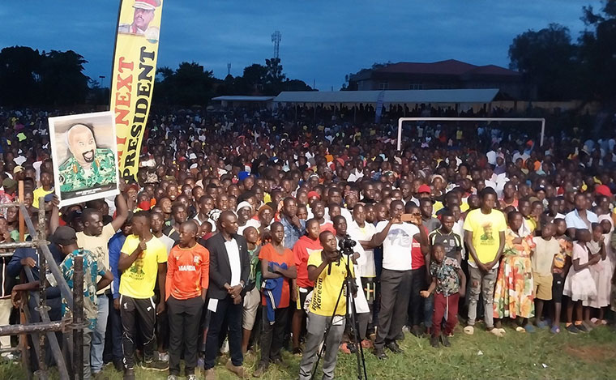

About BRPV
Busoga Region Patriotic Volunteers — a regional patriotic volunteer and mobilisation initiative associated with the Patriotic League of Uganda.

A Regional Patriotic Volunteer Initiative
Busoga Region Patriotic Volunteers (BRPV) is a Busoga-focused patriotic volunteer and mobilisation initiative associated with the Patriotic League of Uganda (PLU).
BRPV exists to coordinate patriotic volunteering, community engagement and regional mobilisation across the districts of the Busoga region, under the leadership of the Chief Mobiliser for Busoga.
Serving Communities Across the Region
BRPV works across the Busoga region to mobilise volunteers and engage communities around patriotic values, civic responsibility and practical service.
- Regional mobilisation and volunteer coordination
- Community engagement across Busoga districts
- Youth-focused patriotic activities
- Support for the wider PLU framework in the region

What We Stand For
Patriotism
Love for country and commitment to national unity.
Service
Practical volunteer action that serves communities.
Unity
Bringing Busoga together around shared goals.
Integrity
Honesty and transparency in all we do.
Accountability
Answerable to the communities we serve.
Inclusivity
Welcoming volunteers from every background.

Part of the Wider Patriotic League Structure
BRPV operates as a regional initiative within the wider framework of the Patriotic League of Uganda (PLU), focusing on the Busoga region.
The regional initiative is led by the Chief Mobiliser for Busoga Region, who coordinates regional activities in alignment with the broader national patriotic movement.